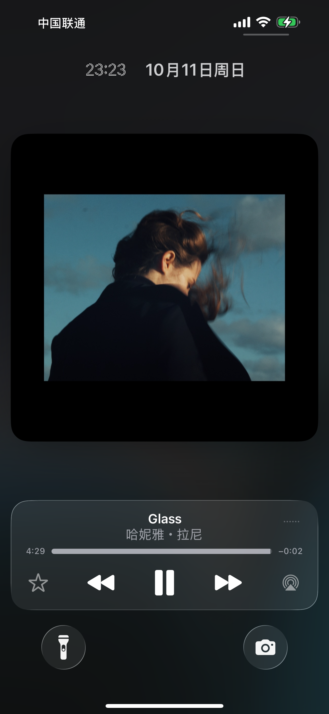

<!doctype html><html lang="zh-CN" data-music-shell="true"><head><meta charset="utf-8"><meta name="viewport" content="width=device-width,initial-scale=1"><title>Jinghan Wang · Glass</title><link rel="stylesheet" href="music-local.css?rev=bd59898c509c"></head><body class="music-shell-body">
<iframe id="browsing-frame" title="Jinghan Wang 网站内容 / Website" allow="fullscreen; clipboard-write"></iframe>
<audio id="background-audio" preload="none" loop src="assets/music/glass.mp3"></audio>
<aside class="music-panel" id="music-panel" aria-label="音乐播放器 / Music player">
<div class="music-transport"><button id="music-back" type="button" aria-label="后退十秒 / Back 10 seconds"><svg viewBox="0 0 24 24" aria-hidden="true"><path d="M5 8V3M5 8h5M5 8a8 8 0 1 1-1 8"/></svg><small>10</small></button><button id="music-play" type="button" aria-label="播放 / Play"><svg viewBox="0 0 24 24" aria-hidden="true"><path class="play-shape" d="M7 3 22 12 7 21Z"/><path class="pause-shape" d="M6 4h4v16H6zm8 0h4v16h-4z"/></svg></button><button id="music-forward" type="button" aria-label="前进十秒 / Forward 10 seconds"><svg viewBox="0 0 24 24" aria-hidden="true"><path d="M19 8V3M19 8h-5M19 8a8 8 0 1 0 1 8"/></svg><small>10</small></button></div>
<div class="music-cover" role="img" aria-label="Glass · Hania Rani，用户提供的专辑封面"></div>
<div class="music-track"><div class="music-track-heading"><div><strong>Glass</strong><span>Hania Rani</span></div><span id="music-time">0:00</span></div><input id="music-progress" type="range" min="0" max="100" value="0" step=".1" aria-label="播放进度 / Playback position" disabled><p id="music-status" role="status">点播放，听一会儿。 / Press play, stay a while.</p></div>
<button id="music-repeat" type="button" aria-pressed="true" aria-label="单曲循环 / Repeat"><svg viewBox="0 0 24 24" aria-hidden="true"><path d="m16 2 4 4-4 4M20 6H7a4 4 0 0 0-4 4m5 12-4-4 4-4m-4 4h13a4 4 0 0 0 4-4"/></svg></button>
<div class="music-volume"><button id="music-mute" type="button" aria-pressed="false" aria-label="静音 / Mute"><svg viewBox="0 0 24 24" aria-hidden="true"><path d="M3 9h4l5-5v16l-5-5H3Z"/><path class="volume-waves" d="M16 8a6 6 0 0 1 0 8m3-11a10 10 0 0 1 0 14"/></svg></button><input id="music-volume" type="range" min="0" max="1" step=".01" value=".65" aria-label="音量 / Volume"></div>
<button id="minimize-music" type="button" aria-label="收起，继续播放 / Minimize, keep listening">×</button>
</aside><script src="music-local-shell.js?rev=6b0e918df9c3"></script></body></html>
